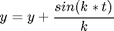

Contents
function out=PLVt(a1,a2)
temporal phase locking value
compute the instaneous phase of each signals and return the sum of exponential phase differences (plv)
$$ PLV=1\fract{N} $$ or $$ \abs{\sum{\exp{j(\phi_1(t)-\phi_2(t)))}}} $$
Unable to interpret LaTeX string "$$ PLV=1\fract{N} $$ or $$ \abs{\sum{\exp{j(\phi_1(t)-\phi_2(t)))}}} $$"
test on two sinus
t=0:0.1:10; f1=1;f2=1.5; phi1=0;phi2=0.5; a1=sin(2*pi*f1*t+phi1); a2=sin(2*pi*f2*t+phi2); out=PLVt(a1,a2) plot(out)
% subplot(411);plot(a1) [x1]=hilbert(a1); [x2]=hilbert(a2); phi1t=atan(imag(x1)./real(x1)); phi2t=atan(imag(x2)./real(x2)); out=abs(mean(exp(i*(phi1t-phi2t)))); % subplot(414);plot(atan(imag(x1)./real(x1)))
Error using PLVt (line 25) Not enough input arguments.
end